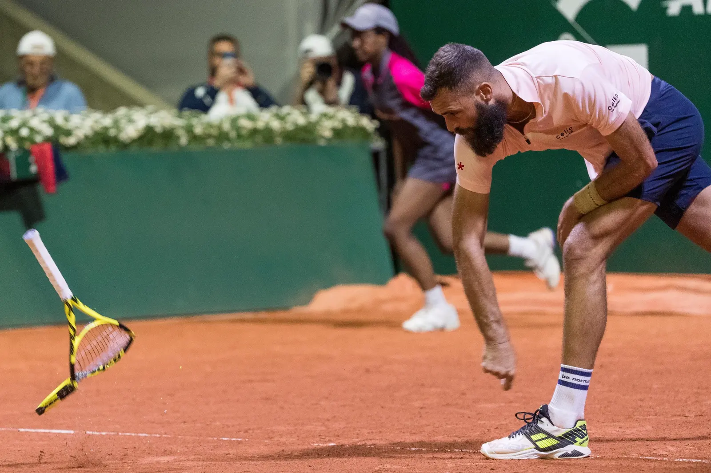
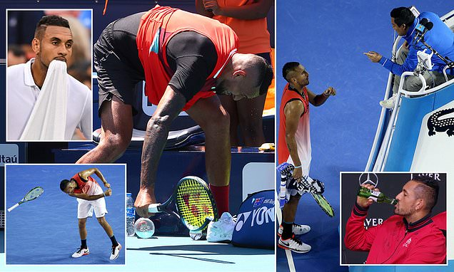
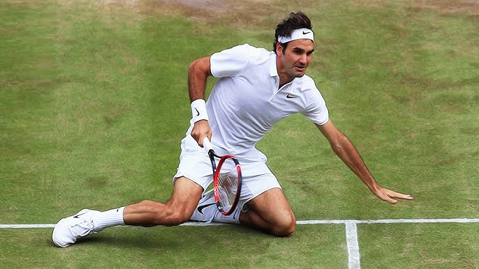
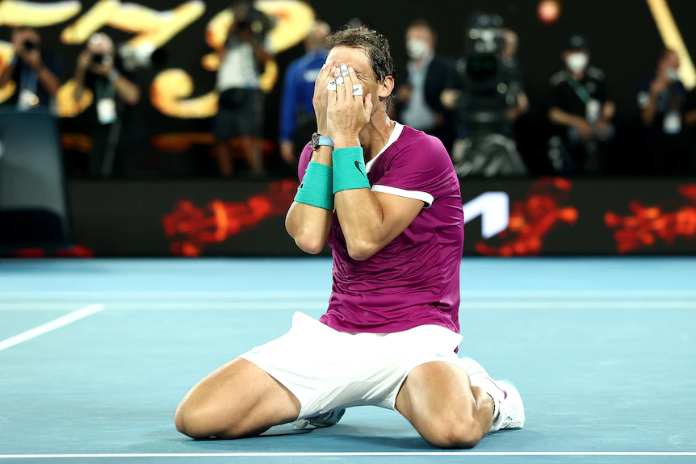

Pourquoi les plongeurs sont-ils de si mauvais comédiens ?
Parce qu'ils manquent toujours de profondeur dans leur performance !
Bonjour à tous, je suis Orel MAZOR, le cerveau derrière ce site incroyablement divertissant (ou du moins, j'essaie !).
Originaire de Paris, je suis un véritable passionné de tennis et de sport en général. Mes journées sont aussi remplies que la boîte de biscuits dans la cuisine (et c'est dire !), surtout lorsque je m'entraîne à faire des amortis aussi délicieux que des cookies fraîchement sortis du four.
| Prénom | Nom | Photo | Âge | Pays d'Origine | Classement ATP | Highlights | Description |
|---|---|---|---|---|---|---|---|
| Novak | Djokovic | 36 | Serbie | 1 | YT | L'un des plus grands joueurs de tennis de tous les temps, Novak Djokovic est réputé pour sa polyvalence sur toutes les surfaces et sa détermination sur le court. | |
| Benoît | Paire |  | 34 | France | 111 | YT | Benoît Paire, le joueur français au style de jeu unique, est connu pour son talent créatif sur le court et sa personnalité excentrique en dehors du court. |
| Nick | Kyrgios |  | 28 | Australie | - | YT | Nick Kyrgios, le joueur australien controversé, est réputé pour son jeu puissant et son style de jeu imprévisible qui peut déstabiliser n'importe quel adversaire. |
| Federer | Roger |  | 40 | Suisse | Retraité | YT | Légende vivante du tennis, Roger Federer continue d'éblouir le monde par son jeu élégant. |
| Rafael | Nadal |  | 37 | Espagne | 654 | YT | Roi incontesté de la terre battue, Nadal est connu pour sa combativité exceptionnelle. |